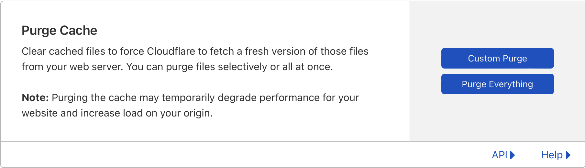
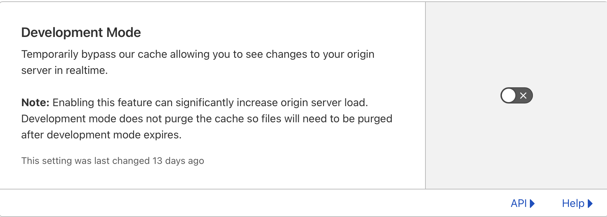
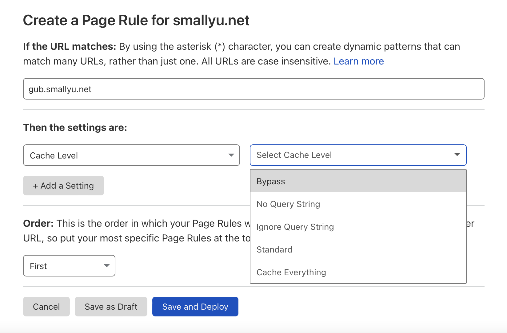
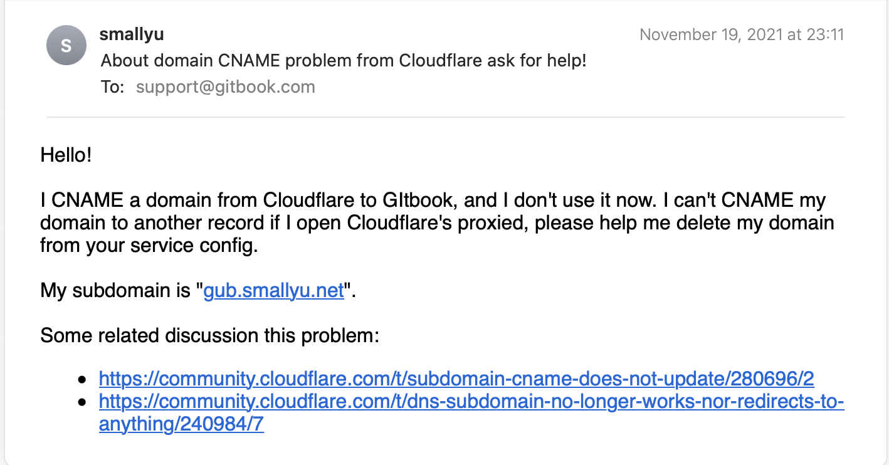
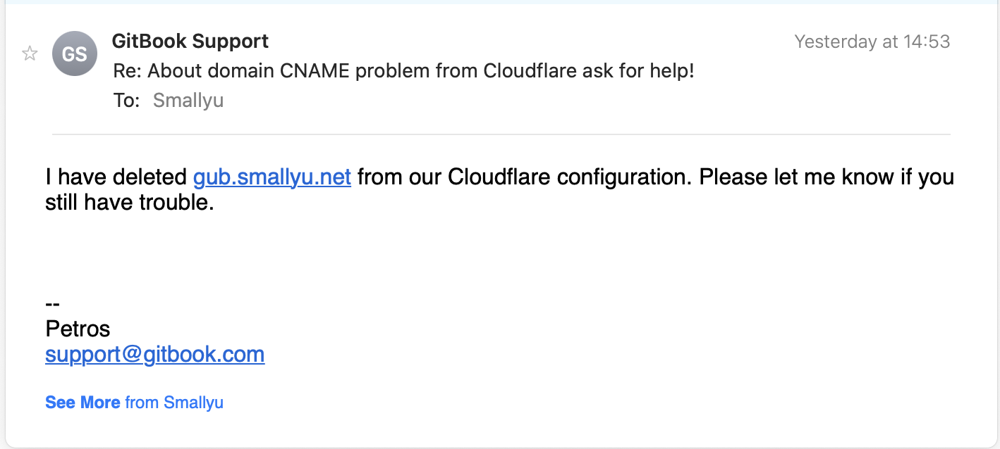

10 月 15 日，我写下一句话：
用 cloudflare cloud 的 DNS，把子域名 gub 从原来 CNAME 到 gitbook 改为指向到 github，到现在已经超过 72 小时，开启 DNS proxy 的情况下依然跳转到 gitbook，看样子是一个 302 forward。
不是 cacheing 的问题，已经很多次打开 dev mode 并且 purge 所有内容了。猜测 cloudflare cloud proxy 服务对于 forward 记录的更新非常慢，甚至有 bug。现在经过的时长一定超过 TTL 了。
一个月过去了，问题无意间得到了解决。想展开详细描述一下我遇到的问题。
这里会涉及到两个概念，DNS（Domain Name System）和 CDN（Content Delivery Network）。如果你不太接触 Web service 领域，可以先了解一下它们的联系和区别。
一开始的时候，我计划写一本开源书，选择 GitBook 作为写作平台。GitBook 名声在外，又有 GitbookIO/gitbook 那样广为人知的开源渲染工具，是开源书的不二选择。经过短暂的试用后，在平台的使用上没有感觉到异常。我创建了 Workspace，然后在 GitHub 上新建仓库，把仓库关联到 GitBook 上，一切都很顺利。我简单测试了一下 GitBook 和 GitHub 自动同步的能力，有可能会出现一点点冲突，但还是容易解决的。
我在 GitBook 上绑定了自定义的域名。smallyu.net 这个域名托管在 Cloudflare 上，子域名 gub.smallyu.net 也是在 Cloudflare 上设置 DNS 记录。全世界都知道，Cloudflare 会提供免费的 CDN 服务，只要在 DNS 记录上打开 Proxy 的橙色按钮开关就可以了：
当时在解析到 GitBook 的时候，开关是打开的。之后没几天，正好遇到了 GitBook 改版大升级，写作界面完全改变了。改版后一两天，我想要更新一些页面的内容，发现改版后的 GitBook 操作流程反直觉、bug 满天飞，每次修改都相当于 Git 的 Pull Request，而且每次点编辑按钮，都会新增一个 Pull Request 的条目。当同时存在多个 Pull Request 记录时，页面状态会完全不可控，这个是 1、那个是 2、另一个是 3，还不能增量合并，因为你无法区分两个 PR 之间，一些内容是没修改过还是被删除了。重点在于，PR 没有删除选项，稍微有点强迫症都受不了。网速不好的时候，多刷新两下编辑页面，草稿箱就会多出好几个 PR 的条目，还不知道哪个是刚刚修改的。包括一些其他使用体验上的小问题，当时我还吐槽说：
现在 gitbook 的在线编辑难用过头了，不能删除 commit，不能新建文档，光标会自动跳转……他们是怎么对用户负责的。
后来决定放弃 GitBook，换成了 docsify，页面部署在 GitHub Pages 上，sub.smallyu.net 域名的解析也换到了 GitHub 上。更改 DNS 的解析记录后，发现解析没有生效（Cloudflare 上的 CDN Proxy 开着），访问 https://gub.smallyu.net 总是跳转到原来的 GitBook 页面上。
一开始怀疑是 DNS TTL 的问题，因为在 Proxied 的状态下，TTL 的值只能是 Auto。毕竟 Cloudflare 的 CDN 节点多，我的域名访问量又低，可能 DNS 记录更新比较慢。幸幸苦苦等了 3 天，这个时间足够长了，发现解析依然不生效，因为域名还是跳转到了旧的页面。
dig 域名的记录，是这样的结果：
gub.smallyu.net. 300 IN A 104.21.81.212
gub.smallyu.net. 300 IN A 172.67.146.253
此时域名是查不到 CNAME 记录的。对比之后，发现这就是 Cloudflare CDN 的 IP。域名已经解析到了 CDN 上，问题是 CDN 没有返回预期的新页面的内容。
然后偶然发现，把 CDN Proxy 关了，域名解析正常了，A 记录是 GitHub 的，CNAME 也是 GitHub 的，页面是新的。
是什么问题呢？Cloudflare 的 CDN 没有刷新内容。
Cloudflare 有一个 Caching 的配置，也提供了 Purge 的能力：
在点过很多次 Purge Everything 的按钮后，CDN 内容仍然没有刷新，即使打开其他人都说有效的开发者模式，也是徒劳：
包括自定义页面规则，不走任何缓存，也无济于事：
甚至为了让内容更新生效，我在 GitBook 上删除了原有的 Workspace，还注销了账号。仍然没有用。
之后就不了了之了，只要不开 Proxy，域名解析就是能用的。不过，我当时认为可能是 CDN 的 bug，也许 GitBook 用了 302 forward 之类的记录，CDN 不能正确刷新这种类型的记录。
最近，在访问 https://gub.smallyu.net 的时候页面稍微卡顿了一下，想起这个页面是没有走 CDN 的，想到了 Cloudflare 上的这条不正常的 DNS 记录。顺手 Google 了一下相关问题，没想到这次找到了有用的信息。之前遇到问题的时候也在网上搜过，搜出来的全是更新缓存之类，这次却找到了不一样的内容。
Cloudflare 有一些 partners，这些 partners 有着控制 Cloudflare DNS 的权力，Cloudflare 的域名在解析到 GitBook 上后，CDN 的 DNS 就受 GitBook 控制了，在 Cloudflare 上的配置优先级低于 GitBook 上的配置。
相关问题的链接：
我发邮件给 GitBook Support：
没想到 GitBook Supoort 一天之内就回复并解决了问题：
经过测试，现在一些正常，确实是那样的原因。
谁能想到，Cloudflare 如此广泛使用的服务提供商，会把域名在 CDN 上的解析权限交给 partners。
谁能想到，GitBook 的产品即使用户删除了 Workspace 注销了账户，在系统内的域名解析记录都不会被删除。
这件事情可以带来的启发是，我们应该从普通的用户思维转变为开发者思维。也许在某种观念的影响下，因为所谓 “官网”、“权威” 的概念，当使用一些平台的时候，我们习惯于首先质疑自己的使用方法和操作错误，却很少质疑平台的问题。即使明确是平台的问题，也不会优先试图联系平台方解决问题。从这个点其实可以发散出很多内容，以后有机会再展开。
最后现在用 Rust 团队开发的 mdbook 了。GitBook 稍微有点过时、处于不怎么维护的状态。docsify 也有问题，docsify 更适合项目文档，除了样式不那么凸显文字外，页面和页面之前是没有关联的，没有上一页下一页的跳转链接，不太像是一本书。虽然 mdbook 的样式没有很时尚，但是功能齐全完整、编译速度能感受到的快，好用就行。